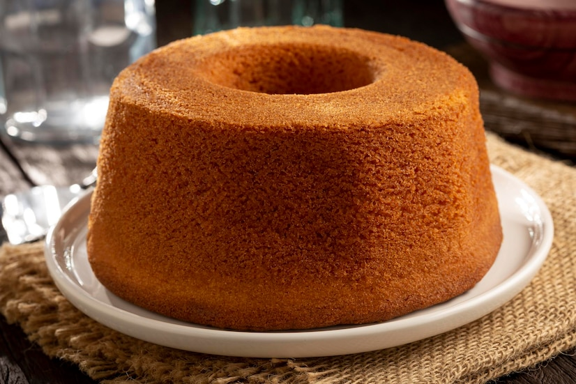
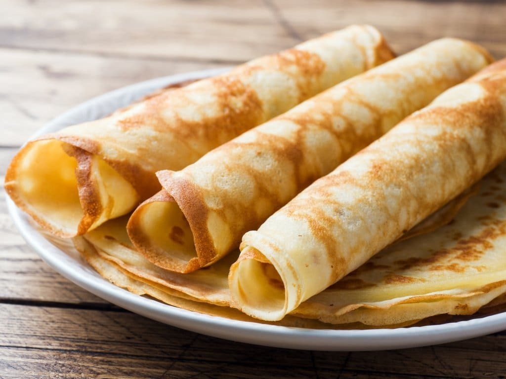

Strogonoff

Ingredientes
- 3 peitos de frango cortados em cubos
- 1 dente de alho picado
- sal a gosto
- pimenta-do-reino a gosto
- 1 cebola picada
- 2 colheres (sopa) de maionese
- 1 colher de manteiga
- 1/2 copo de ketchup
- 1/3 copo de mostarda
- 1 copo de cogumelos
- 1 copo de creme de leite
- batata palha a gosto
Modo de Preparo
- Em uma panela, misture o frango, o alho, a maionese, o sal e a pimenta.
- Em uma frigideira grande, derreta a manteiga e doure a cebola.
- Junte o frango temperado até que esteja dourado.
- Adicione os cogumelos, o ketchup e a mostarda.
- Incorpore o creme de leite e retire do fogo antes de ferver.
- Sirva com arroz branco e batata palha.
Ingredientes
- 3 peitos de frango cortados em cubos
- 1 dente de alho picado
- sal a gosto
- pimenta-do-reino a gosto
- 1 cebola picada
- 2 colheres (sopa) de maionese
- 1 colher de manteiga
- 1/2 copo de ketchup
- 1/3 copo de mostarda
- 1 copo de cogumelos
- 1 copo de creme de leite
- batata palha a gosto
Modo de Preparo
- Em uma panela, misture o frango, o alho, a maionese, o sal e a pimenta.
- Em uma frigideira grande, derreta a manteiga e doure a cebola.
- Junte o frango temperado até que esteja dourado.
- Adicione os cogumelos, o ketchup e a mostarda.
- Incorpore o creme de leite e retire do fogo antes de ferver.
- Sirva com arroz branco e batata palha.
Bolo simples
Ingredientes
- 2 xícaras (chá) de açúcar.
- 3 xícaras (chá) de farinha de trigo.
- 4 colheres (sopa) de margarina.
- 3 ovos.
- 1 e 1/2 xícara (chá) de leite.
- 1 colher (sopa) bem cheia de fermento em pó.
Modo de Preparo
- Bata as claras em neve e reserve.
- Misture as gemas, a margarina e o açúcar até obter uma massa homogênea.
- Acrescente o leite e a farinha de trigo aos poucos, sem parar de bater.
- Por último, adicione as claras em neve e o fermento.
- Despeje a massa em uma forma grande de furo central untada e enfarinhada.
- Asse em forno médio 180 °C, preaquecido, por aproximadamente 40 minutos ou ao furar o bolo com um garfo, este saia limpo.
Massa de panqueca
Ingredientes
- 2 xícaras (chá) de farinha de trigo
- 2 xícaras (chá) de leite
- 3 ovos
- 1 pitada de sal
Modo de Preparo
- Bata todos os ingredientes no liquidificador por 2 minutos.
- Em seguida desligue e, com uma colher, misture a farinha que grudou no copo do liquidificador.
- Bata novamente só para misturar e reserve.
- Unte a frigideira com um fio de óleo e leve ao fogo até aquecer.
- Com o auxílio de uma concha, pegue uma porção de massa e coloque na frigideira, gire a frigideira para espalhar bem a massa.
- Abaixe o fogo e deixe dourar por baixo, em seguida vire do outro lado e deixe dourar, repita o processo com toda a massa.